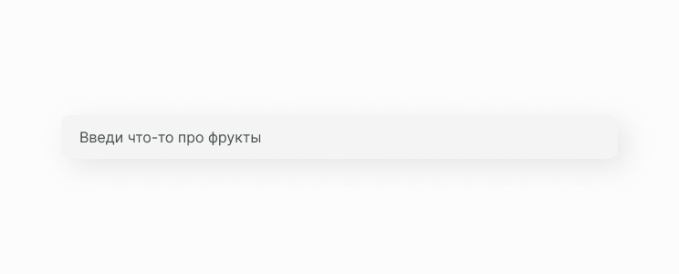
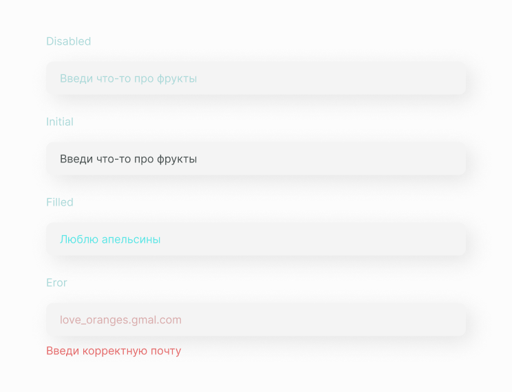

Input
Текстовые поля позволяют пользователям вводить текст в пользовательский интерфейс. Обычно они появляются в формах и диалогах. Чаще всего в формах используется тег <input>.
Он не имеет закрывающего тега. Вся информация, необходимая браузеру для обработки, содержится непосредственно в теге <input> и задается с помощью различных атрибутов.
Структура компонента
Input состоит из контейнера, и текста в различных состояниях. Input должен выделяться и указывать на то, что пользователи могут вводить информацию, а также должно быть понятно какую именно информацию нужно вводить.
Состояние компонента
Исходя из структуры, мы можем выявить несколько состояний компонента с данными и без них. А также нельзя забывать про состояние ошибки.
Реализация
Мы создаем сложный компонент, который сможет может хранить в себе массив с данными, напрмер с chip.
import React, { PureComponent } from 'react'
import './A_Input.scss'
export default class A_Input extends PureComponent {
constructor(props) {
super(props)
}
render() {
const { children, onFocus, onBlur, placeholder, disabled } = this.props
return (
<div className="A_InputContainer">
{children}
{!disabled && (
<input
placeholder={placeholder}
className="A_Input"
onBlur={onBlur}
onFocus={onFocus}
/>
)}
</div>
)
}
}Затем прописываем стили для этого компонента.
.A_InputContainer .A_Input {
width: 610px;
font-size: 20px;
color: #426060;
cursor: auto;
background-color: #f4f4f4;
padding: 14px 20px;
border-radius: 10px;
font-weight: 300;
border: none;
outline: none;
}Ссылки
Также для тебя ссылки на Figma с дизайн системой и GitHub с библиотекой компонентов.
Составляющие
В этот компонент часто выводится следующие компоненты.
Этот компонент часто выводится в следующих компонентах.